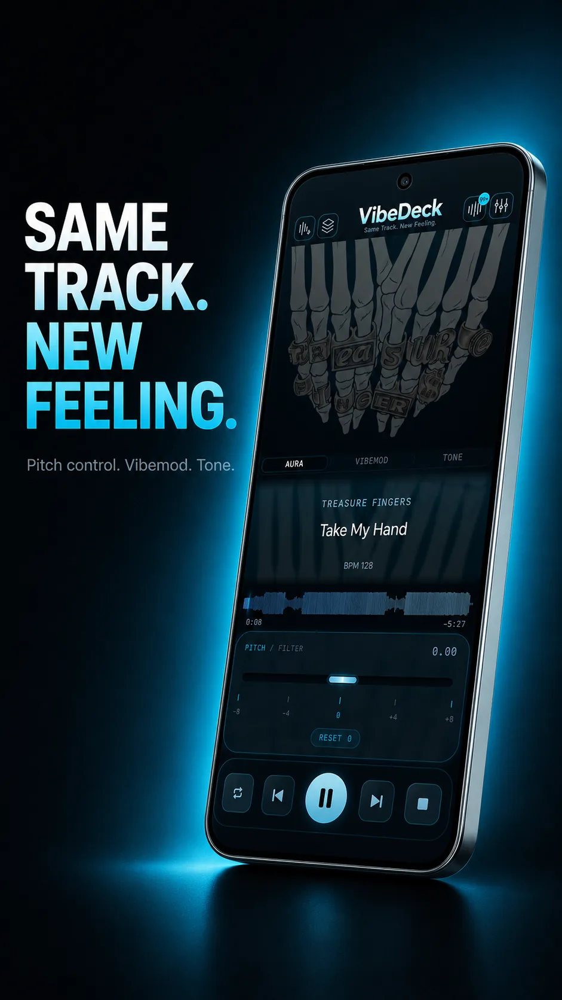

True offline
No streaming, no buffering, no login. Your library lives on your Android phone and plays in airplane mode.
Offline music player for Android
VibeDeck Player is an offline music player for Android that plays the MP3, FLAC and WAV files you already own, with a 3-band EQ and gain, pitch and tempo control, and DJ tools. No streaming, no ads, no account.

Most Android music apps push you toward streaming: subscriptions, data usage, downloads that expire. VibeDeck Player goes the other way. It is an offline music player for the files sitting on your phone right now, with pro sound tools on one dark screen.
No streaming, no buffering, no login. Your library lives on your Android phone and plays in airplane mode.
MP3, FLAC and WAV in one queue. Your rips, downloads and DJ pool tracks, all playable without conversion.
3-band EQ with gain, bass boost, pitch and tempo, waveform scrubbing and BPM readout, made for headphones.
Related: offline music player for iPhone, MP3 player with no ads.
No. Add your files once, then play anywhere with zero connection.
Your own collection: downloads, rips, purchases, DJ pools. If you own the file, it plays.
Yes, the core player is free with no ads. Premium unlocks the full sound engine.
Download VibeDeck Player
Offline music player for Android. No account. No ads. No tracking.